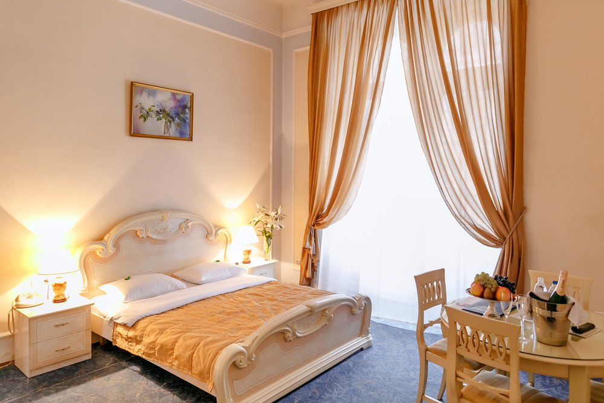
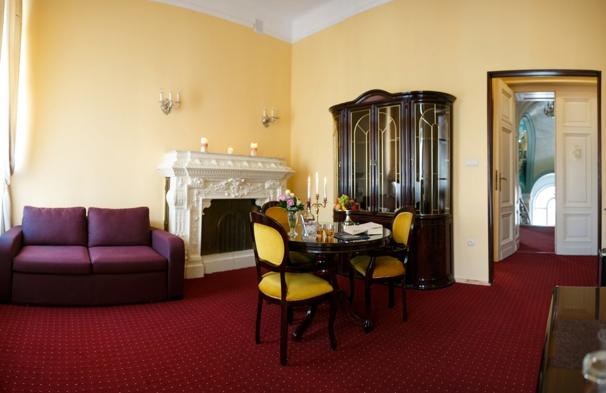
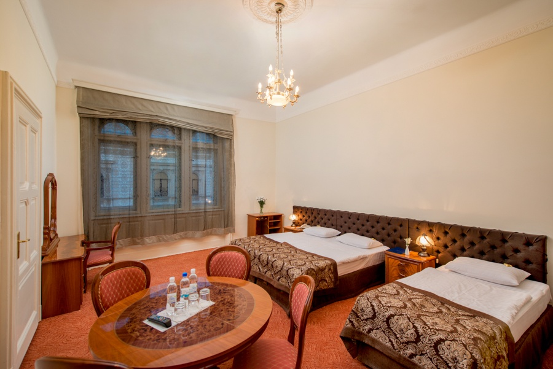

Звичайний

Площа: 27 м². Вид: Історична частина міста. На Вас чекають надзвичайно вишукані кімнати, облаштовані сучасними італійськими меблями. Гості зможуть насолодитися чудовою панорамою на найвизначніші пам'ятки старовинного міста з балкончиків своїх кімнат. Витончені елементи декору та просторий інтер'єр створять романтичну атмосферу. В номерах затишні меблі, кабельне телебачення, WI-FI, вся необхідна техніка, зручні халати та тапочки, міні-косметика.
Люкс

Найбільший номер готелю, загльною площею 126 м2, де поєднуються краса, стиль та комфорт. Тут витончено переплітаються прогресивний сучасний дизайн і колажі на стінах за мотивами робіт Леонардо да Вінчі. Ідеальний вибір для сімейного відпочинку: до вітальні примикають дві окремі спальні, в кожній є власна ванна кімната і величезний балкон. Безумовно, в кожній з трьох кімнат є свій телевізор з плоским екраном, тож відпочивати можна не тільки разом, але й окремо.
Сімейний

Площа: 34 м². Вид: Історична частина міста.
Надзвичайно елегантні та просторі номери категорії «Сімейний Стандарт» стануть чудовим вибором для усіх охочих відпочити у теплому колі своїх рідних та близьких. До Ваших послуг одне двоспальне та одне односпальне ліжко або диван, затишні італійські меблі, кабельне телебачення, Wi-Fi, ванна кімната з необхідною міні-косметикою, комплектом рушників, феном, зручними халатами та тапочками для дорослих та дітей. Є можливість доставити колиску. Затишні та комфортні кімнати стануть ідеальним втіленням усіх Ваших побажань.